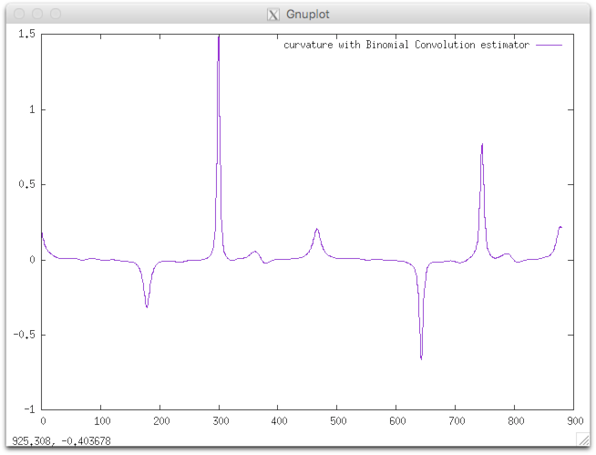

curvatureBC
Estimatates curvature using a binomial convolver.
Usage: curvatureBC [options] –input <fileName>
Allowed options are :
Positionals:
1 TEXT:FILE REQUIRED Input FreemanChain file name
Options:
-h,--help Print this help message and exit
-i,--input TEXT:FILE REQUIRED Input FreemanChain file name
--GridStep FLOAT=1 Grid step
Example:
We consider as input shape the freeman chain of the DGtal/examples/sample directory. The contour can be displayed with displayContours :
$ displayContours $DGtal/examples/samples/contourS.fc contourS.png --drawPointOfIndex 0
The curvature can be computed as follows:
$ curvatureBC $DGtal/examples/samples/contourS.fc > curvatureBC.dat
$ gnuplot
gnuplot> plot 'curvatureBC.dat' w lines title "curvature with Binomial Convolution estimator"
You should obtain such a result:
| contour | curvature |
|---|---|
 |  |
| CCW oriented (index 0=blue pt) | resulting curvature |
- See also
- curvatureBC.cpp